Calendário da temporada 2024
Próxima corrida

23
MAR
AU
GP da Austrália
Albert Park Circuit • Melbourne
Faltam
12
Dias
04
Horas
32
Minutos
18
Segundos

AU
Albert Park Circuit
- Primeira corrida
- 1996
- Número de voltas
- 58
- Extensão do circuito
- 5,278 km
- Distância da corrida
- 306,124 km
-
23 MARAU
GP da Austrália
Albert Park Circuit • Melbourne
5,278 km 58 voltasPróxima -
09 MARBH
GP do Bahrein
Bahrain International Circuit • Sakhir

5,412 km 57 voltasConcluída -
24 MARSA
GP da Arábia Saudita
Jeddah Corniche Circuit • Jeddah

6,174 km 50 voltasConcluída -
07 ABRJP
GP do Japão
Suzuka Circuit • Suzuka

5,807 km 53 voltasConcluída -
21 ABRCN
GP da China
Shanghai International Circuit • Xangai
5,451 km 56 voltasConcluída -
05 MAIUS
GP de Miami
Miami International Autodrome • Miami

5,412 km 57 voltasConcluída -
19 MAIIT
GP da Emília-Romanha
Autodromo Enzo e Dino Ferrari • Ímola

4,909 km 63 voltasConcluída -
26 MAIMC
GP de Mônaco
Circuit de Monaco • Monte Carlo

3,337 km 78 voltasConcluída -
09 JUNCA
GP do Canadá
Circuit Gilles Villeneuve • Montreal

4,361 km 70 voltasConcluída -
23 JUNES
GP da Espanha
Circuit de Barcelona-Catalunya • Barcelona
4,657 km 66 voltasPróxima